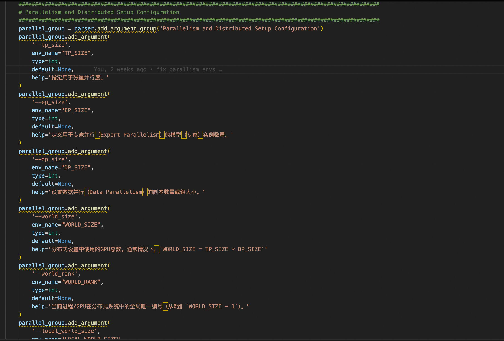

Environment Variable Development Tutorial#
We have already processed all environment variable-related code in RTP_LLM, with only some environment variables related to Test, Monitor, RDMA, etc. remaining unprocessed. For future development, any new environment variables should be handled uniformly according to this document.
Python Parameter Parsing#
In rtp_llm/server/server_args.py, all user-configurable environment variables are converted to command-line parameters when starting the Python service. If you find any comments for the related parameters below unreasonable, please feel free to modify them directly.

When adding new parameter information, you need to specify the parameter type, variable name, default value, and its corresponding specific meaning. The processing logic here is actually to use the parsed parameters to update environment variables. The current priority is: args > env > default.
Parameter Propagation#
We have collected and organized all config-related information and classified it for processing on both the C++ and Python sides. At the top level of the C++ side is GptInitParameter, which categorizes various environment variables in C++ into different configuration types. On the Python side, everything is summarized in EnvArgs under rtp_llm/config/py_config_modules.py. EnvArgs also categorizes various configurations, and throughout the system, various configurations are gradually propagated down to specified locations for use.
2.1 C++ Side Parameter Propagation#
In rtp_llm/cpp/th_op/ConfigModules.h, all related parameter information classifications are placed here. Let’s illustrate with the following example:
struct ParallelismDistributedConfig {
int tp_size = 1;
int ep_size = 1;
int dp_size = 1;
int pp_size = 1;
int world_size = 1;
int world_rank = 0;
int local_world_size = 1;
std::string to_string() const;
void update_from_env_for_test();
};
For example, after adding a new parameter, you need to specify the default value and modify the content of both the to_string and update_from_env_for_test functions. Additionally, these configurations are bound and passed to the Python side for interaction through Pybind11.

It’s important to note that the parameter order here must be consistent with the order defined in the struct. This is a requirement of Pybind11 because we need to pass these parameters from the Python side later. Specifically, in rtp_llm/config/gpt_init_model_parameters.py, when generating GptInitModelParameters, it calls update_gpt_init_params_from_env for update processing. The GptInitParameter updated here is actually defined in C++. In rtp_llm/cpp/dataclass/EngineInitParameter.h, parameters are constructed and updated during initialization. Later, these parameters are propagated down layer by layer to the corresponding function call locations as needed (all parameters are propagated down).
Another task that needs to be done is, after updating new parameters, after the project compilation is complete, you need to execute the following operations:
$ cd rtp_llm/ops
$ bash rtp_llm/ops/gen_pyi.sh
This will generate the corresponding files under bazel-bin/stubs. Find the modified parts in the generated files and place them in rtp_llm/ops.
Summary:
Modify
rtp_llm/cpp/th_op/ConfigModules.handrtp_llm/cpp/th_op/ConfigModules.ccModify
rtp_llm/config/gpt_init_model_parameters.pyModify
rtp_llm/server/server_args.pyModify
rtp_llm/server/test/server_args_test.pyModify
rtp_llm/ops/libth_transformer.pyi
A total of 6 files need to be modified.
2.2 Python Side Parameter Propagation#
The Python side has significantly more environment variables than the C++ side, and there is some overlap between the two. We have merged some Python-specific environment variables into the C++ side’s config classification, while the rest have their own independent configuration classification sets on the Python side.
Currently, our design considers the current code architecture. Config retrieval exists in two scenarios: one is in some global methods or static methods where we directly obtain corresponding configuration parameters from StaticConfig in rtp_llm/config/py_config_modules.py, and for other cases, we obtain them by passing in py_env_configs configuration. Additionally, regarding Python-side environment variable modifications, we adhere to the following principles:
Principle: Environment variable settings in tests/Test environment variables/smoke test environment variables are all preserved. Global initialization environment variable settings and retrieval are also preserved (such as internal_source/rtp_llm/models/internal_init.py). env_param, etc., which exist for rpc_api transmission specification, are also preserved (such as rtp_llm/tools/api/model_size_evaluator_api.py).
In future development of new environment variables, the above principles must be followed. Python environment variable modifications are similar to the C++ side. Here are the specific code locations that need to be modified:
rtp_llm/config/py_config_modules.pyrtp_llm/server/server_args.py(There are many corresponding classified configuration files in the same directory that can be modified accordingly.)rtp_llm/server/test/server_args_test.py